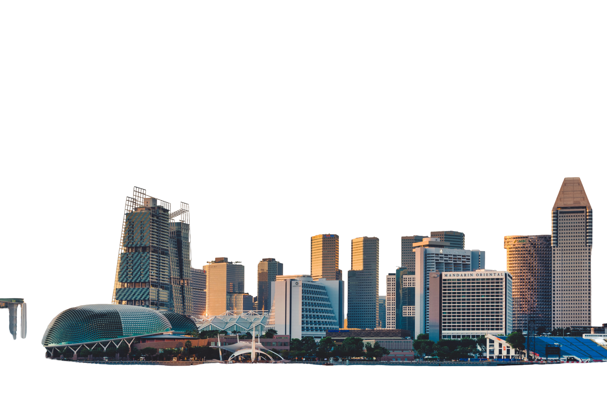

A small island but a masterclass in innovation and adaptation.

01
The Big Idea
Singapore is a very urbanised area. While it originally had a natural location (tropical island at the end of the Malay Peninsula with a natural bay), it has been transformed using technology:
Since the 1960s Singapore has gained around 25% more land through land reclamation. This has increased the total land area to over 730km² from approximately 580km². Areas such as Marina Bay and parts of Changi Airport have been built on land reclaimed from the sea.
Rivers have been turned into reservoirs. The Marina Barrage created a freshwater reservoir by sealing off the mouth of the Marina Bay.
Nature has been engineered. The gardens by the bay have ‘Supertrees’ which are vertical man-made gardens with solar panels and rainwater harvesting. Everything has been engineered.
While Singapore is known as a “City in a Garden,” everything has been engineered.
02
Buildings & Roads
The main areas of Singapore are the Central Business District and Marina Bay on the south coast. The rest of the country is divided into housing towns (HDB estates) connected via an MRT underground train.There are several geographical impacts:As there isn’t much land there has been lots of development vertically and horizontally. Most people live in high rise public housing and there has been developments underground with MRT lines, roads and future storage and utilities.
The coastline and bays have influenced Singapore. The natural deep bay has made the port on the south a major shipping port worldwide. The CBD has developed alongside this.
There are many bridges across the water such as the Helix Bridge and Benjamin Sheares Bridge. There are also expressways around the coast.
The central forests are there to protect the water. The Central Catchment Nature Reserve has not been developed as it feeds into the reservoirs on the island.
03
Weather & Climate Adaptations
Climate: Singapore is very hot, humid and rainy throughout the year. Temperatures range between 25-34 degrees Celsius. There is a lot of humidity and heavy monsoon rains, particularly between November and January. There is no snow or real winter.
Adaptations
Heat: Streets lined with trees, covered walkways connecting MRT stations and buildings, air-conditioned shopping malls and underground walkways. There are also rooftop and vertical gardens to help cool the buildings.
Flooding: Lots of large drainage systems, canals and retention ponds. New buildings must be built on raised platforms. The ABC Waters scheme has turned concrete drainage systems into landscaped rivers which also help drain storm water.
Sea Level: Protection around the coastline and minimum height for areas reclaimed from the sea.
Cooling: Marina Bay has district cooling. This provides cooled water to many buildings and is more efficient than individual air conditioners.
04
Work and Leisure
Industry:Global Shipping – Port of Singapore is one of the busiest ports in the world,finance and banking,electronics and semiconductors,biotech and technology,tourism and conventions.
Leisure:
Gardens by the Bay, Cloud Forest and Flower Dome (High tech, temperature controlled).
Beaches, Theme Parks and Resorts on Sentosa Island (Some man made).
Hawkers centres and Shopping Malls (Indoors, air conditioned).
Marina Bay Sands, F1 night race and Concerts.
Parks, Southern Ridges and Cycling Park Connectors.
Overall there are many high tech developments and global trade opportunities. Leisure activities involve engineered nature and indoor temperature controlled environments.
05
50 Years From Now
Issues:
Sea level rise – Much of Singapore is only a few metres above sea level and some areas will be at risk by 2100.
Extreme heat and rainfall due to climate change.
Not much land, water or food. Most food is imported and a large amount of water is imported.
An ageing population putting pressure on housing and healthcare.